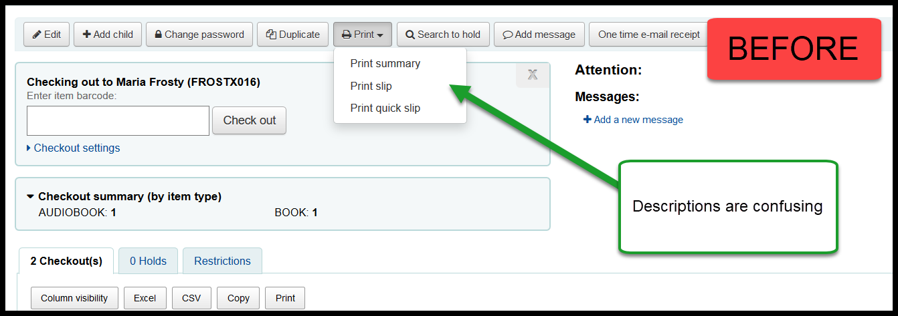
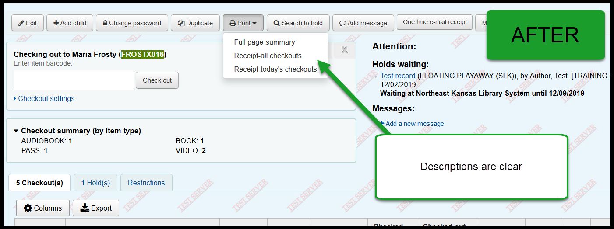
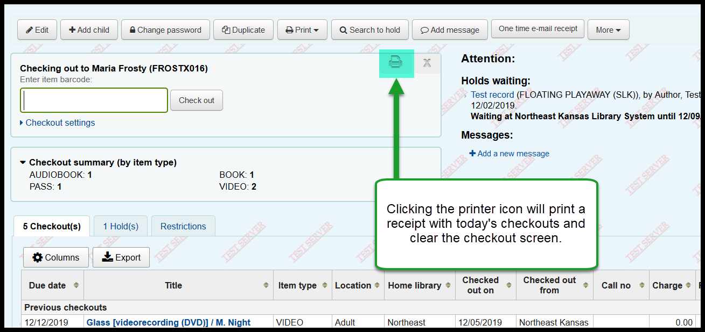

Koha Upgrade - Receipts¶
There are a couple of changes to printing receipts for patrons.
Print drop-down changes¶
The text under the “Print” button doesn’t clearly describe what the options do. The text will be updated during the upgrade.
Print summary becomes Full page-summary
Print slip becomes Receipt-all checkouts
Print quick slip becomes Receipt-today’s checkouts
BEFORE:
AFTER:
Frequently asked questions¶
- Q: What is the “Print summary” / “Full page-summary?”
- A: This option prints the full details of the patron’s account - contact information, items checked out, overdues, current fees, etc. The template for this prints on a full 8 1/2 x 11 inch sheet of paper and the template for this page cannot be modified at the present.
- Q: What is the “Print slip” / “Receipt-all checkouts?”
- A: This option prints a list of all items checked out to the patron on a receipt sized sheet of paper. This receipt can be customized on a library-by-library basis.
- Q: What is the “Print quick slip” / “Receipt-today’s checkouts?”
- A: This option prints only a list of the items checked out today on a receipt sized sheet of paer. This receipt can be customized on a a library-by-library basis.
Print receipt and close¶
There is a new icon that will both print a quick slip and close the check-out screen.
